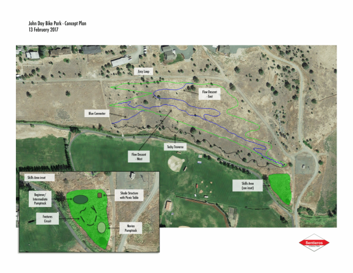
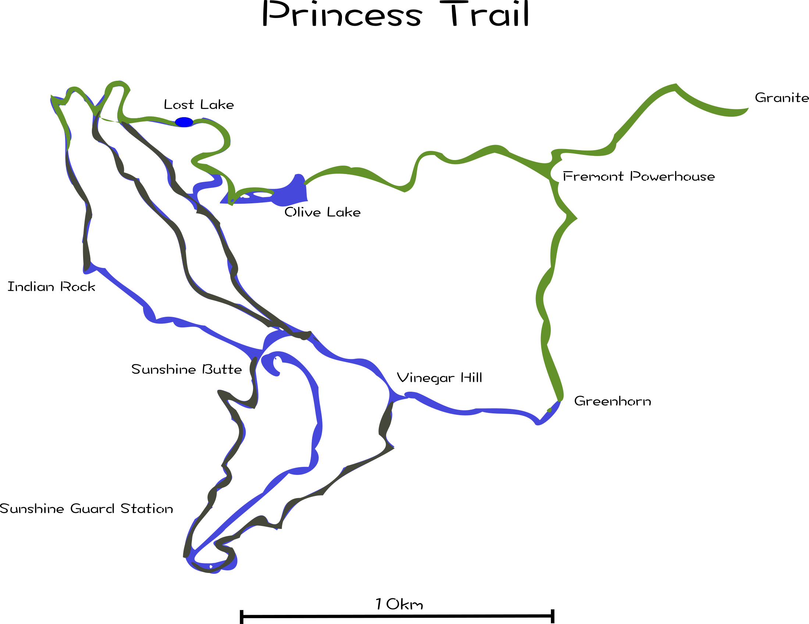

Projects

Magone
overview: A network of purpose built mountain bike trails. Features aprox. 30 miles of trail of varying difficulty centered around a beautiful mountain lakestatus: Approved; currently under construction
Est. Completion: 2020
links/media: 1 2 3

status: Approved; Raising Funds
Est. Completion: 2018
links/media: 1 2 3
John Day Bike Park
overview: A seven acre mountain bike park located in the heart of John Day. Includes aprox. 3 miles of flow trail, technical obstacles, and pump track.status: Approved; Raising Funds
Est. Completion: 2018
links/media: 1 2 3

Palomino Buttes
overview: A network of purpose built mountain bike trails. Includes beginner to expert single track featuring technical rock features and high desert views.status:Currently in development
Est. Completion: 2020
links/media: N/A

status:Early Development
Est. Completion: N/A
links/media: N/A
Princess Trail
overview: A proposal to unite a technical alpine single track network with a remote two-track circuit. Features granite peaks, alpine lakes, gold mines, and ghost towns.status:Early Development
Est. Completion: N/A
links/media: N/A